Default - Normalize
<ContrastEnhancement>
<Normalize/>
</ContrastEnhancement>

Review of Raster Styling in GeoServer
Raster Styling Demonstration
<Opacity>
<ColorMap type=ramp|values|intervals extended=true|false>
<ColorMapEntry color="" quantity="" label="" opacity=""/>
<ChannelSelection>
<RedChannel> <GreenChannel> <BlueChannel>
<SourceChannelName>
<GrayChannel>
<SourceChannelName>
<ContrastEnhancement>
<ShadedRelief> (not implemented in ver 2.0)
<OverlapBehavior> (not implemented in ver 2.0)
<ImageOutline> (not implemented in ver 2.0)<NamedLayer>
<Name>gtopo</Name>
<UserStyle>
<Name>dem</Name>
<Title>Simple DEM style</Title>
<Abstract>Classic elevation color progression</Abstract>
<FeatureTypeStyle>
<Rule>
<RasterSymbolizer>
<Opacity>1.0</Opacity>
<ColorMap>
<ColorMapEntry color="#000000" quantity="-500" label="nodata" opacity="0.0" />
<ColorMapEntry color="#AAFFAA" quantity="0" label="0" />
<ColorMapEntry color="#00FF00" quantity="1000" label="1000"/>
<ColorMapEntry color="#FFFF00" quantity="1200" label="1200" />
<ColorMapEntry color="#FF7F00" quantity="1400" label="1400" />
<ColorMapEntry color="#BF7F3F" quantity="1600" label="1600" />
<ColorMapEntry color="#99CC66" quantity="2000" label="2000" />
<ColorMapEntry color="#336633" quantity="2500" label="2500" />
<ColorMapEntry color="#006600" quantity="3000" label="3000" />
<ColorMapEntry color="#FFFFFF" quantity="3500" label="3500" />
</ColorMap>
</RasterSymbolizer>
</Rule>
</FeatureTypeStyle>
</UserStyle>
</NamedLayer><ColorMap> or <ColorMap type="ramp">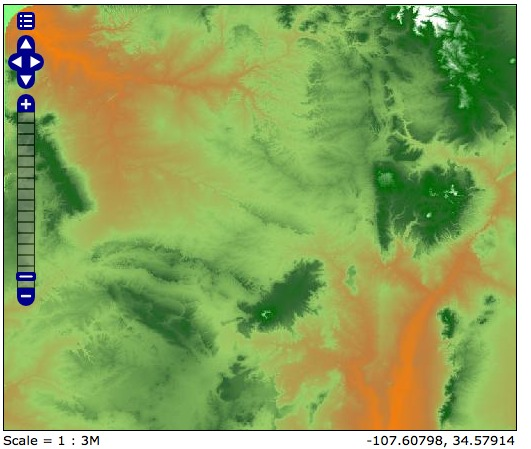
<ColorMap type="intervals">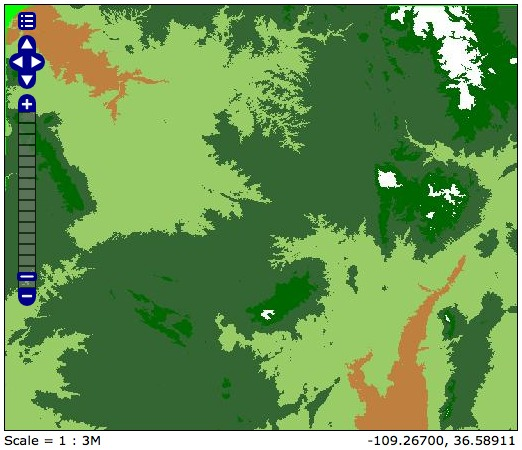
<ColorMap type="values">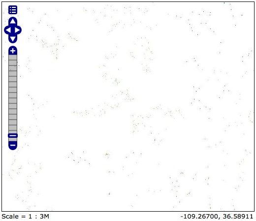
http://geog485.unm.edu:8080/geoserver/wms?
service=WMS&
version=1.1.0&
request=GetLegendGraphic&
layer=Karl:kb_nm_ned09_30m_nw_qtr2&
style=dem-value&
format=image/png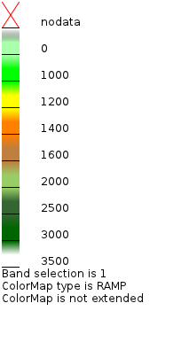 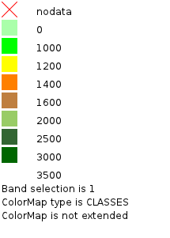 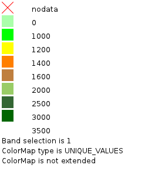
<ColorMap type="ramp" extended="false"> = 256 colors in ramp
<ColorMap type="ramp" extended="true"> = 65536 colors in ramp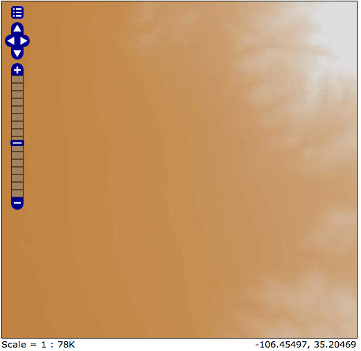 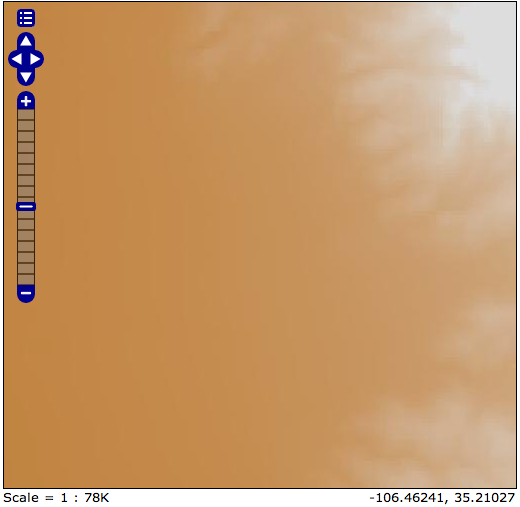
Options for defining opacity appear in two places in the raster symbolizer.
At the level of the entire raster dataset
<Opacity>0.5</Opacity>Within a ColorMapEntry for a specific color definition within a ColorMap
<ColorMap>
<ColorMapEntry color="#000000" quantity="-500" label="nodata" opacity="0.0" />
<ColorMapEntry color="#AAFFAA" quantity="0" label="0" />
<ColorMapEntry color="#00FF00" quantity="1000" label="1000"/>
...
<ColorMapEntry color="#FFFFFF" quantity="3500" label="3500" />
</ColorMap>Many raster datasets contain multiple bands of values which may be viewed individually or assigned to the colors red, green, and blue to generate a color image representing a combination of band values. GeoServer allows for the specification of a single band for display as a GrayChannel or three bands as RedChannel, GreenChannel, and BlueChannel.
<RasterSymbolizer>
<Opacity>1.0</Opacity>
<ChannelSelection>
<RedChannel>
<SourceChannelName>3</SourceChannelName>
</RedChannel>
<GreenChannel>
<SourceChannelName>2</SourceChannelName>
</GreenChannel>
<BlueChannel>
<SourceChannelName>1</SourceChannelName>
</BlueChannel>
</ChannelSelection>
</RasterSymbolizer>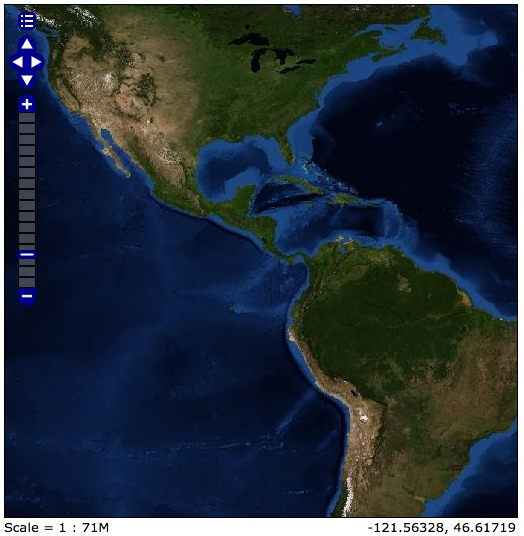 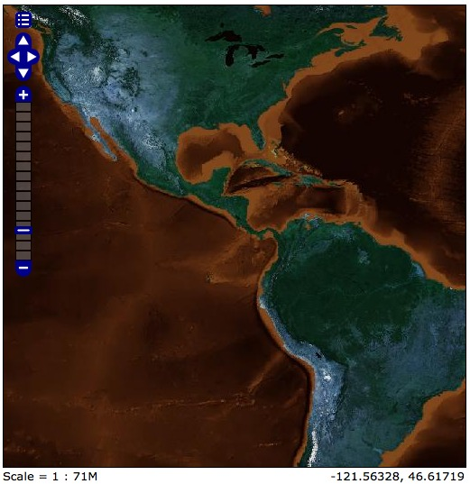
Some raster data may need adjustment to increase the contrast (the range between the darkest and lightest values) displayed. GeoServer provides three options for contrast enhancement, each of which have a different effect on the resulting image.
The values are stretched so that an equal number of pixels fall into each color in the range
The minimum and maximum brightness values are mapped to the minimum and maximum raster values
The image is brightened or darkened by a specified factor (negative numbers darken, positive numbers brighten)
<RasterSymbolizer>
<Opacity>1.0</Opacity>
<ChannelSelection>
<RedChannel>
<SourceChannelName>1</SourceChannelName>
<ContrastEnhancement>
<Histogram/>
</ContrastEnhancement>
</RedChannel>
<GreenChannel>
<SourceChannelName>2</SourceChannelName>
<ContrastEnhancement>
<Histogram/>
</ContrastEnhancement>
</GreenChannel>
<BlueChannel>
<SourceChannelName>3</SourceChannelName>
<ContrastEnhancement>
<Histogram/>
</ContrastEnhancement>
</BlueChannel>
</ChannelSelection>
</RasterSymbolizer><ContrastEnhancement>
<Normalize/>
</ContrastEnhancement>
<ContrastEnhancement>
<Histogram/>
</ContrastEnhancement> 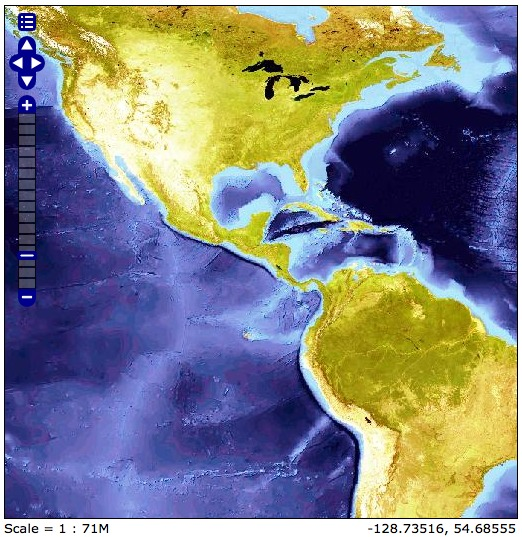
<ContrastEnhancement>
<GammaValue>.5</GammaValue>
</ContrastEnhancement> 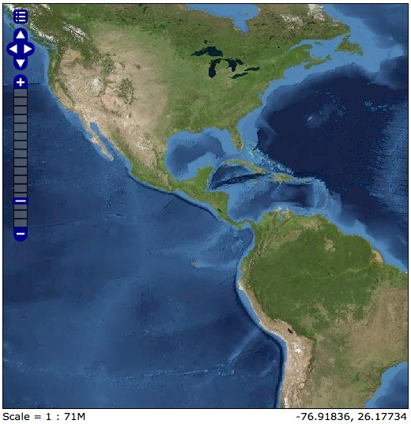
Class GeoServer Instance: http://geog485.unm.edu:8080/geoserver/web/